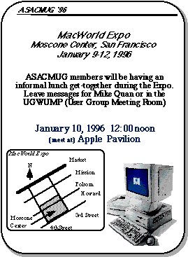
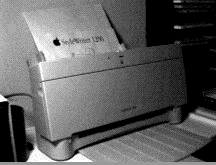
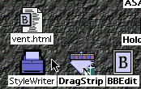
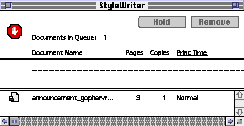
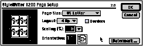

Fourth Quarter, 1995
Table of Contents
- President's Column
- MacWorld Expo 1996 - San Francisco
- Word 6.0 Fast Tips
- Computing's Holy War (Cary Lu)
- StyleWriter 1200 Review
- Tex-Edit Plus Review
- Mac News and Opinions
Presidents
Column
Mike Quan
A few couple of years ago, AlliedSignal decided to standardized on the PC thus making future purchases of Macintosh computers very difficult without extensive justification. During the last year, the Sales and Marketing folks have been asked/forced to give up their favorite computer platform and convert to the Wintel (Windows-Intel) "standard". In addition, even the minimal support required for Macs compared to PCs has been difficult to acquire. With these factors, added to the overall doom often reported in the media with respect to Apple, it's understandable that many Macintosh followers fear the worst for the platform. Although Apple may be having problems, it's also having its fair share of successes which are often overlooked. For an excellent discussion of this area, read the article by Carry Lu, "The Holy Wars", inside this newsletter.
Apple will have revenues of over $13 billion this year with the highest sales in terms of both revenues and units shipped in its history. The company has little or no debt and cash reserves of almost a billion dollars. It was the number one seller of personal computers in the U.S. during the last quarter beating out Packard Bell, Compaq, and IBM. It was recently rated #1 in consumer satisfaction by J.D. Powers and Assoc. and even #1 in reliability by PC Magazine. It is by far the leading computer in education with 65% of all computers in K-12 in the U.S. Even with the hype of Windows 95, it is still the standard for ease of use with the best reports of Windows 95 stating that Windows 95 is almost as good as or is closing the gap with the Mac. One of the biggest problems for Apple during the year was that it couldn't manufacture enough products and thus had as much as a one billion dollar back order for products. Nevertheless, Macintoshes which once seemed overpriced before factoring the extra not included on PCs (e.g.. networking, SCSI, Trinitron monitors, etc.) now are priced at or below comparable PCs, particularly the Performa line which includes over $1000 in software and CD ROM products.
In my opinion, the most significant accomplishment was an almost seamless transition from the 680x0 microprocessor to the RISC based PowerPC processor. This accomplishment puts the MacOS on a solid hardware platform with performance potential to leave the competition in the dust with respect to both price and performance. Most observers agree that Apple made a mistake not licensing the MacOS many years ago but the situation has changed with several clone vendors turning out computers that not only compete but often exceed Apple's own offerings.
This situation will improve further when computers based upon the Common Hardware Reference Platform (CHRP) begin shipping in mid 1996 manufactured by many hardware companies including Apple, IBM, Motorola, Canon, Power Computing, Radius, Daystar, and possibly even Gateway and other current PC vendors. The CHRP machines will be able to run any of four operating systems, MacOS, OS/2, UNIX, and even Windows NT.
The Wintel camp also has a few challenges that are beginning to become visible. As much as Microsoft wishes for us to believe, Windows 95 is not a true 32 bit operating system, but rather a mixture of 16 and 32 bit code. The 16 bit code like an anchor that must be carried to maintain backward compatibility. A problem that has resulted is that the next generation Pentium Pro processor (P6) is optimized for 32 bit code and actually runs slower than a plain Pentium (P5) when running Windows 95. This is a problem which must be solved if the platform is continue its dominance.
I'm predicting that Windows 95 will soon be replaced by a version of Windows NT with the Windows 95 interface. This will allow it to take advantage of the new RISC based processors (even those by Intel). This will mean that much of the older DOS based codes will either be broken or have to be handled via an emulator. The question will be whether this can be accomplished with minimal heartburn for the users. Apple has already successfully made the transition and will have an edge if Microsoft cannot pull this off flawlessly.
Happy Holidays to all of our readers and friends. See you next year!
| With this newsletter, many of our members will be receiving a small Christmas gift from the users group and as well as a coupon book of discounts from various Mac vendors. Now ask yourself, what has the PC users group done for you lately? One behalf of the ASACMUG officers, let me express our best wishes to you and your families now at Christmas and into the new year. |
ASACMUG will be represented at MacWorld, by about a half dozen members. The event will be held January 9-12 (Tues-Fri.) at the Moscone Convention Center in San Francisco. With over 70,000 participants and hundreds of vendors, this is a very exciting event for Mac users and everyone is encouraged to attend if possible. For more information, contact any club officer. One idea to minimize both time and costs would be to make it a one day trip (you will not be able to see the whole show). Round trip air fare is about $100 but the best days would be on Wednesday or Thursday. See you there!
Future of ASACMUG
I've often been asked what is the future for ASACMUG now that Macs are an endangered species. The intended direction is to shift the club's emphasis from work to home use for those of us who use the Mac at home. The last significant group of Macs appears to be in Engineering who will probably take a couple years or more to completely displace them with PCs. We will try to continue to be a resource for those who still have Macs at AlliedSignal through our bulletin board personal advice, and even a newsletter. When ASACMUG first started, there were hardly any Macs in Torrance, but during the early years we saw significant growth in the Mac population. The intend is that the users group will continue in a low key mode doing what we can for Mac users. We would appreciate your comments.
Word 6.0 for Macintosh
FastTip: Setup/Performance Optimization
Microsoft Corporation
The following are excerpts from the Microsoft KnowledgeBase (MW1052.DOC) Only sections for Macs with at least 6 Megs of RAM are included.
Allocate Memory to Word
When Word is installed, the installer program allocates a certain amount of memory to the Word application, based on the amount of memory on the Macintosh.
2000K-2500K is sufficient for simple tasks and smaller documents. However, if you are working on larger documents (50 pages or more) or documents with many graphics, or if you are performing more memory- intensive tasks (such as grammar checking), allocate more memory to Word if it is available.
For example, if you have 5 MB of memory, Word is allocated 2.5 MB when it is installed. If the system uses 1.5 MB for itself, that leaves 3.5 MB available when no applications are running. You can safely allocate another .5 MB of memory to Word, bringing the total to 3 MB.
To allocate more memory to Word, select the Microsoft Word icon in the Finder. From the File menu, choose Get Info. Increase the Preferred Size, based on how much available memory your Macintosh has. Allocating more memory to Word helps, but generally, unless your documents contain large numbers of graphics (in which case allocating up to 6 MB of memory may improve performance), allocating more than 3- 4 MB of memory to Word does not necessarily increase the speed of Word.
Disk Cache
You can increase the disk cache setting in your Macintosh if you have enough available memory. A larger disk cache can improve the performance of your Macintosh by setting up a portion of memory to store frequently used information that is usually accessed from a hard disk. The disk cache speeds up Macintosh operations such as opening and quitting Word, loading portions of Word (for example, the grammar checker), and switching between active programs. The disk cache option is located in the Macintosh Memory control panel.
ADVANCED SETTINGS
You can increase the BitMapMemory or CacheSize settings in Word's Advanced Settings if you have at least 8 MB of RAM. To modify these settings, use the procedures in the "Modify Word's Advanced Settings" section of this Application Note. That section also contains a description of the BitMapMemory and CacheSize settings.
BitMapMemory
If your documents frequently contain many bitmapped graphics (such as scanned images and screen captures), you can increase the redrawing and scrolling speed of bitmaps by increasing the amount of memory that Word reserves for these operations. On a computer with at least 8 MB of RAM, you can increase the BitMapMemory setting as high as 2048K (2 MB). The following sample entry from Advanced Settings sets the BitMapMemory value at 2048K:
[Microsoft Word] bitmapmemory=2048
CacheSize
If you primarily work with large documents, you can increase the CacheSize setting to enlarge Word's internal Document Text cache. With a larger cache, Word does not need to access the hard disk as frequently, which speeds up performance. Start by changing the CacheSize setting to 256K and then, if necessary, increase it to 1024K (1 MB). The following sample entries from Advanced Settings set these values respectively:
[Microsoft Word] cachesize=256
[Microsoft Word] cachesize=1024
NOTE: You may not need both the BitMapMemory and CacheSize settings, depending on the type of documents you usually create. If you change one of these settings and do not notice any improvement in Word's performance, delete the setting so that Word, System 7.x, and other applications can use the memory for other operations. You may find that Word's default settings already provide optimal performance.
General Speed Tips - Use the Right Display Mode for Faster Screen Display
Monitor settings significantly affect operations on the Macintosh that entail redrawing the screen (for example, screen updates that occur when you scroll or update graphics). If you are writing reports and working with spreadsheets, you may need only 16 to 256 colors. (You can easily switch back to using more colors if no change in performance occurs or if your work requires additional video capabilities.)
You can set the number of colors or shades of gray your monitor can use by opening the Monitors control panel in Control Panels.
Optimize Hard Disk Access
By optimizing your hard disk periodically, you can improve disk access time. The access speed of a hard disk affects overall Macintosh performance, more so in conditions of significant disk activity (such as reading or writing a file or reading an application or segments of an application). Because Word is a large application, a significant amount of hard disk access occurs when reading parts of the application into memory.
[Programs such as Norton Utilities and MacTools can optimize drives.]
Virtual Memory
The System 7.x Virtual Memory feature swaps out portions of files and programs from memory to the hard disk. With the Virtual Memory feature turned on, a 4-MB Macintosh can perform tasks that require more than 4 MB of memory. However, because hard disk access time is much slower than memory access time, virtual memory is much slower than random- access memory. Whenever possible, you should not use virtual memory.
How to Print Faster
Many factors affect printing speed. Below is a short checklist of steps you can take that may help increase printing speed:
Use printer-resident fonts instead of their TrueType(R) counterparts. For example, when you print to a PostScript(R) printer, if you normally use New York, use Times instead. These are very similar fonts (although Times is a bit smaller), but a font description for Times already exists in the printer. Therefore, the font definition is not added to the print job sent to the printer. The New York font description, however, does not exist in the printer, so it must be sent with the print job. Font descriptions can dramatically increase the size of a print job, which causes slower printing.
If you print over a network, consult your network documentation to make sure your print server is working optimally.
If you don't need to continue working while Word is printing, turn off the Background Printing option. This option allocates processor time to Word during a print job so that you can continue working; however, this means less processor time is available for printing. To turn off Background Printing, choose Chooser from the Apple menu, click once on your LaserWriter(R) printer on the left side. Under Background Printing in the bottom-right corner, click Off.
Computing's Holy War
Published in the Seattle Times, June 18, 1995.
Copyright 1995 by Cary Lu.
This article may be freely copied and
distributed in paper and
electronic form without charge if this copyright paragraph
is included.
The battle between proponents of Macintosh and IBM PC computers has for many years resembled a religious war, and as in all religious wars, much of the rhetoric has been driven more by ignorance than knowledge.
Very few people are truly skilled with both Macs and PC. Since PCs outsell Macs by a wide margin--seven to one or more--most people with computer experience actually know only about DOS and Microsoft Windows on an IBM PC or clone.
Not surprisingly then, if you ask which computer should you buy, the most common answer -- from computer sales people, data processing managers, and newspaper columnists -- is a PC. But before you take that advice, ask if your adviser actually uses both Macs and PCs.
If he or she knows only one system well, consider the advice suspect. Steer clear of PC bigots and Mac bigots who use jargon: "Only PCs support true pre-emptive multitasking and multiple processors." "Only Macs have dual-channel SCSI for fast disk arrays." These techie issues are irrelevant for most users; in any event both systems will offer all these features in the coming months.
Which computer do I recommend? I think you should get the same kind of computer that your most technically astute friend uses -- a friend you can call at midnight on Sunday when you really get stuck. If you buy a Mac, you won't need an expert, since you won't get stuck nearly as often. And if you don't have a technical friend, you will be much better off with a Mac -- with some exceptions that I will discuss later.
Is the Mac really that much easier to use? Consider this: One quarter of all the questions that Patrick Marshall has answered in his Q&A column in The Seattle Times deals with PC problems that never occur on a Macintosh.
Macintosh users never have to deal with memory management, interrupts, DMA channels, or a SYSTEM.INI file. Inside a Mac, there are no jumpers to set, either on the main board or on the vast majority of accessories.
PC users have to learn these details or else they can't get software to run. The computer industry estimates that PC users have trouble running 25-35 percent of multimedia CD-ROMs. I'm accustomed to trouble.
This morning, I installed a CD-ROM for my five-year-old on my Pentium computer and got a message: "Increase DMABuffer Size." I doubt if most PC users would know how to respond; what's more, no message explained two additional problems beyond the DMABuffer size.
Through long experience, I have learned most of the hundreds of technical tricks necessary to get CD-ROMs running on a PC, although a few discs still have me stumped.
Surveys show that PC users rarely buy CD-ROMs. A CD-ROM on a PC is too often like a book with pages glued together or illustrations torn out.
CD-ROM installation problems are almost unheard of on a Mac, aside from a simple free update for recent system software (Apple's Multimedia Tuner). Two other problems are easy to understand -- CD-ROMs that need color won't run on a black-and-white Mac and a few CD-ROMs need more memory than the simplest Macs have.
I've just answered the bulk of all Mac CD-ROM installation questions. In the past five years, I have not seen a single incompatible or even difficult-to-install CD-ROM on a Mac.
Because no one has to learn any tricks, Mac users buy discs without trepidation. As a result, CD-ROM publishers find that Mac users buy CD-ROMs out of proportion to the Mac's market share.
David Billstorm, president of Media Mosaic and publisher of Mountain Biking and other outdoor recreation CD-ROMs, tells me that 40 percent of sales are for Macs. Yet PC buyers call for technical support far more often than Mac buyers.
Although both Mac and PC versions have the same price, Media Mosaic makes more money from the Mac versions because the cost of answering a single call can wipe out any profit from the sale.
On Christmas day, none of my Mac friends called with problems; several PC friends called (and each one started by apologizing, "The support lines aren't open today. . .")
The Mac is not completely free of software conflicts, especially for enthusiasts who tend to like complexity. But the conflicts are usually resolved by simply moving clearly labeled icons from one folder to another; if you make a mistake, you just move the icon back.
On a PC, you must use far more difficult techniques -- editing cryptic files (WIN.INI, AUTOEXEC, etc.), setting environment variables, adjusting memory locations, changing command-line switches in drivers. If you make a mistake, the computer may refuse to start.
In the past year, the hottest new category of Windows software has been "uninstall" utilities, programs that can remove Windows software. Windows and Windows software can put dozens or even hundreds of files on a hard disk; a person can't keep track of the files without help from another computer program. The Mac neither has nor needs an equivalent utility; removing a program is usually simple and besides, every file is identified by its type and the program that created it.
Quite aside from utilities, more software is available for the PC than for the Mac. You may have a specialized need that can be met only by a PC, particularly for business applications. In a few areas, particularly graphics, the Mac leads.
For the vast majority of users, and certainly for anyone buying a family computer, there is no significant difference in the applications -- word processors and so on -- available for either system.
Microsoft's applications and many other major programs come in both PC and Mac versions. The PC version may come out first, presumably because the publisher wants to reach the larger group of customers first.
The real reasons may not be obvious. Aldus (now Adobe) PageMaker, a program that was originally developed for the Mac, came out in a version 5.0 first for Windows. The project manager explained to me that the programmers disliked Windows intensely. Aldus management insisted on the Windows version first, because if the programmers were allowed to finish the Mac version first, they might never finish the Windows version.
Although the Mac has obvious appeal to the computer novice, the people who really understand computers also tend to prefer Macs. At the recent Electronic Entertainment Expo in Los Angeles, most of the new, unfinished multimedia computer software -- even software destined for PCs -- was demonstrated on Macs rather than PCs.
Famed supercomputer designer Seymour Cray uses a Mac. Two division heads for major PC clone companies called me independently last year; they were leaving their companies and wanted to know which Macs to buy for their new startups. I know of three companies in the Portland area started in the past year by former Intel managers. Two of the three companies chose Macs as their principal computers. (Intel makes most of the CPU chips, such as the Pentium, that drive Windows computers.)
Corporate data processing (DP) managers generally prefer PCs; most have little experience with Macs. PCs do ensure full employment for the DP staff.
At Intel, where many employees are true computer experts, the DP department figures on one support person for every 30 Windows computers. The DP department was astonished to learn that one Intel division had 120 Macs and got along fine with a single support person.
Mac users rarely have problems, and when they do, the answers usually come from other users rather than from the DP department. The hidden cost of support -- and perhaps frustration -- at least partially offsets the Mac's higher prices.
The price gap has narrowed, but it will never close completely. Macs come with more standard features -- all Macs, including laptops, have sound and networking built in. Apple has usually -- but not always -- used higher quality components than the average PC clone.
PC accessories are generally cheaper, but then I've seen a lot of bad keyboards and fuzzy monitors on PC clones. A good monitor costs the same for either system. Ultimately, Apple spends more money; it makes major investments in research and development. For the typical PC clone company, R&D consists of reading spec sheets from Taiwan.
Macs have a longer useful lifetime. I use a five-year-old Mac to play today's multimedia CD-ROMs without difficulty. In the past five years on my PC, I've had to change the CPU twice, the video card twice, the motherboard twice, and the sound board once, just to play ordinary discs. (I also switched to double-speed CD-ROM drives on both systems.)
Apple has made many strategic errors. The first Macintosh clones are only now beginning to appear. Ten years ago, I called for Apple to license the Mac operating system at a MacWorld Expo keynote panel. Many in the audience hissed at my remarks. Yet by refusing to license the Mac system early, Apple made the enormous success of Microsoft Windows possible.
Within the computer industry, the description "more like a Macintosh" is always high praise. The description "more like Windows" is rarely used as praise, except perhaps in contrast to "more like DOS."
Microsoft tells everyone that its forthcoming Windows 95 is more like a Macintosh. The key features of Windows 95 -- long file names, plug-and-play hardware installation, direct file display -- have been on the Mac for eleven years. Yet despite much clever engineering by Microsoft, Windows 95 cannot overcome the chaos inherent to the PC world, both for hardware and for the need now to run three wildly different operating systems and application software (for DOS, Windows 3.1, and Windows 95). Mac users have never had to cope with such jarring changes.
Microsoft's genius lies in getting things to work -- more or less -- despite the PC chaos. Apple's genius lies in getting so many things right in its fundamental Macintosh design and avoiding chaos.
StyleWriter 1200 -
Low-cost, laser-quality printing for under
$250
Alex Morando, AES Engineering
Back in 1989, while Macs were leading the way to acceptance of laser printers, Apple introduced the SytleWriter inkjet printer. These printers, which uses electrical charges to spray ink bubbles on paper, proved very popular to those who couldn't afford a laser printer, which cost about $2000 a few years ago. Even today, getting a good PostScript laser printer will set you back about $1000; you could buy non-PostScript laser printers for less than $500, but would you want to?
Last April, the SytleWriter 1200 was introduced. It uses a new Canon printing mechanism that prints at 720-by-360 dots per inch resolution, prints greyscale images using Apple's GreyShare technology, uses easily available ink cartridges used by the older StyleWriters and Canon inkjets for PCs, and comes at a street price of under $250, with some stores selling them for under $229. I'd finally decided to retire my six-year old ImageWriter and brought one home.
Setup and Features
The printer is easy to setup - out of the box, install the ink cartridge, connect the power cord, connect to the Mac via a serial cable, install the software, and print a test file. The printer controls are simple - there is only a single on/off switch at the top center of the printer. Two lights indicate when the printer is on and if there is a printing error. The printer is Energy Star compliant - it automatically turns itself on when printing and turns itself off after five minutes of inactivity.
The paper feeder holds up to 50 sheets of paper and doesn't make the paper do turns like most laser printers. Printing envelopes requires that two switches be set - one at the feeder and one above the inkjet cartridge. This is the only feature that cannot be controlled from the computer. A slide-out paper tray lets me place it on a small bookcase and takes up very little space.
One of the best features of the SW1200 is the printing software which comes on five HD disks. Although it requires System 7.1 as a minimum, it adds many nice features that make working with it a pleasure:
Native driver - Optimized for Power Macintosh. Even if you don't have a PowerMac, the driver is compatible with all Macs, albeit slower. Since the SW1200 is not a PostScript printer, all processing must be done on the Mac. When printing simple text and graphics on a PowerMac, the software so fast that it is often waiting for the printer to finish the current page before sending the next page. You can easily get the full 3 pages-per-minute output advertised on the box. However, when printing in 720-by-360 mode (highest quality), you will only get 1.5 ppm.
Desktop Printers - This feature was previously available only under QuickDraw GX, which was discussed in the last newsletter. When active, an icon representing your printer shows up on the desktop. To print, you simply drag a document over the printer; it will launch the application, issue a print command, and quit the application automatically. For example, you can take the file vent.html and drag it over the SytleWriter icon to print.
Double clicking on the printer icon produces a status window where the user can temporarily suspend printing, rearrange and delete print jobs, and monitor progress.
Background printing and sharing - The first feature allows you to batch print your document and continue to do other things without waiting for the computer to finish printing; this feature was previously available to networked PostScript printers only. Although the SW1200 cannot be connected to a network, the second feature allows the computer to "share" the printer to the network; this is analogous to sharing files and folders across the network. The SW1200 can effectively be seen and used by others on the network on two conditions - the host Mac is on and the owner activates Printer Sharing when setting up the printer. When shared, the owner's Mac will sometimes slow down as it accepts and processes print jobs from other people.
Printing options - the new Page Setup dialog box allows 4-up printing to save trees and a Watermark option to print a greyscale image behind every page. For example, you may wish to put a large "DRAFT" watermark behind all preliminary documents you distribute. There are also options for the type of paper (plain, coated, glossy) and whether to use GreyShare for graphics.
TrueType fonts - 65 of them, including decorative fonts like and , in addition to standard business and casual styles.

Conclusion
The SW1200 is for those whose graphics output is not too complicated. It is ideal for home and office use to create short memos, listings, charts, graphics thumbnails, and newsletters. In 4-up mode, I've been using it to print documentation and C source code.
The SW1200 is not a PostScript printer. Don't expect it to successfully print out 2 meg Photoshop files or large PostScript illustrations; if you did, you'd already have that $2000 laser printer nearby.
For those willing to wait a little longer or pay a little more, Apple has the Color StyleWriter 2400 ($450).
[This article was published in the Fall '95 BMUG newsletter]
Tex-Edit Plus
A Review By Roger Wright
What is Tex-Edit Plus?
Tex-Edit Plus is a multi-window, styled text editor that fills the gap between Apple's very simple Teach Text and it's immediate successor, SimpleText. Tex-Edit Plus is a Shareware product of Tom Bender of San Angelo, Texas. (Note, the state of Texas, and the name of the application.)
The Shareware cost is a measly $5.00; for this amount, this is the best buy in Macintosh software; everyone should have a copy of Tex-Edit Plus on their Macintosh. It can be obtained from many bulletin boards (I got my copy from America Online), and we will have it on the AES Macintosh BBS. Note that there were several predecessor versions of this application under the name of "Tex-Edit" -- the last version I know of was 2.7. The author decided to start a new application when he added a number of features and modifications; two of which were the expansion to handle files larger than 32k, and the requirement to run under System 7, abandoning System 6.
My Main Reason for Using Tex-Edit Plus: Reading and Printing TeachText Documents
Before describing some of the many features of Tex-Edit, I'll give you my main use of the application. Almost all Macintosh software come with "Read Me" or instructional files that a set up for TeachText, or its successor SimpleText. That is, by double-clicking on the file icon, TeachText or Simple Text open up. Either of these is fine for reading the file on the screen, but if you want a printed copy of the document, you must put up with the built-in margins and pagination of the TeachText (or Simple Text). This usually means that on a laser printer you will have 0.5-inch margins, which I dislike very much for use in 3-ring binders.
Also, if you'd like to edit the document, to put in additional material or to add emphasis, the Apple-supplied editors are very poor, if not impossible.
At one time I tried opening the Read-Me texts in Microsoft Word 5.1, but was very disappointed in that the pictures in the TeachText document were lost. I one case using a "screen-clip" F-Key, I was able to place all of the pictures into the Word document through copies and pastes. But, this is extremely time-consuming and very tedious. Later, I purchased MacWrite Pro. It very nicely opens the TeachText documents (including pictures) and allows such documents to be edited. If one is familiar with MacWrite Pro, this route to customizing the look of the document and printing with favorable margins would not be too bad. Another approach involves first the opening of the document in MacWrite Pro, and then saving it out as a Word document. This preserves the pictures, and if you're more familiar with Word than MacWrite Pro (as I am), the editing and printout can be done there.
But the simplest and quickest way to print out such documents with your own specified margins, is to use Tex-Edit Plus. The margins are easily setup to your desires, and if you want specific pagination, your can insert page breaks anywhere. The printout can also be page numbered. I keep an alias of Tex-Edit Plus on my desktop specifically for opening Read-Me documents.
Tex-Edit Plus allows special additions and modifications. Individual selected text can be styled as to size, font and character. Color can be added, etc. One word of caution: the justification (left, center, right or full) applies to the overall document, not just specific sections.
Tex-Edit Plus For E-Mail
From the author's summary of Tex-Edit Plus capabilities, the following would be useful for e-mail (Tex-Edit Plus uses the same style implementation as AOL, eWorld, SimpleText, Joliwrite, and Stylus):
- Reformat downloaded e-mail or text, correcting word-wrap problems and removing extraneous, non-Mac characters.
- Prepare text for upload to a BBS, so that people with MS-DOS systems can view the document as it was intended to be viewed.
- Instantly quote a brief passage from received e-mail, allowing the sender to remember their original message.
- Add color to your America Online or eWorld e-mail.
Miscellaneous Tex-Edit Plus Capabilities
The full capabilities of Tex-Edit Plus are too numerous to mention in this short review. I have picked out a few for examples.
- Drag and Drop is supported through Apple's Drag Manager. This applies within the working document, across several windows of Tex-Edit Plus, or even between applications.
- Through Apple's Speech Manager Extension, Tex-Edit Plus will read the document to you. (It actually works, but the enunciation is a little flaky.)
- Lots of Find, Replace, Change Case capabilities.
- Conversion of text files between Macintosh, MS-DOS, and Unix systems.
- Special editing features, such as typographical (curly) quotes.
The manual is very comprehensive and easy to understand. Using the margins and pagination that I normally use, it comes to 31 pages.
Author of Tex-Edit Plus
Tom Bender AOL: TomBB, eWorld: TomBB, Internet: tombb@aol.com
Trans-Tex Software
5313 Beverly Drive
San Angelo, Texas 76904
Mac News and Opinion
Talking vs. doing...
Advertising sources have confirmed that most of the key point-of-purchase promotion and packaging design for the IBM Aptiva [nice ads...] were developed and executed on Power Macintosh computers, from the cardboard boxes the Aptiva ships in to the brochures to the in-store displays.
This reminds me of the original animated Pentium ad, which was rendered on a bank of six Quadra 840avs... Just goes to show you that if you want to talk about compute power, go with Wintel. But if you want to use compute power, get a Mac.
Another PageMaker?
December 11, 1995 -- Demonstrating the strong market demand for its powerful yet easy-to-use authoring tools for the Internet, Adobe Systems Inc. announced today that Adobe PageMill web authoring software for the Macintosh has shipped over 30,000 units in the first month of availability.
Adobe PageMill simplifies the traditional process of World Wide Web authoring by allowing customers to easily create, edit and update web pages without the complexities of Hypertext Markup Language (HTML).
[Overnight, the Macintosh has become a leading Internet development platform with a new genre of software - Web processors]
Go Bruins!
November 28, 1995 -- The Executive MBA Program at UCLA's Anderson School has standardized on the PowerBook platform for their students. The PowerBooks are built into the tuition of the program, and are distributed to the students approximately six weeks before schools starts. During these six weeks, a variety of Macintosh PowerBook and Software Application training courses are offered to the students.
The Program uses the PowerBooks in all parts of the curriculum, for extensive E-Mail, presentations, communications, etc. Exams are taken on the PowerBooks, the students bring them to all classes, and there are folders/servers set up for each class, each work study group and for each class. The PowerBooks are an integral component of the program.